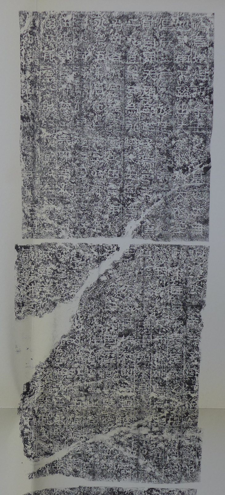
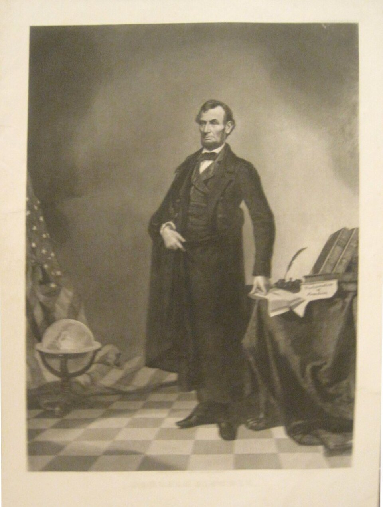

판화 · 보스턴 학살(1770)
중학교 역사① · 1단원 역사 학습의 기초
사료누가, 왜 남겼나
폴 리비어(헨리 펠럼 원화), 「보스턴 학살」(1770) · 미국 국립미술관 · CC0
“자료는
자료는
믿을 수 있을까?
사실무엇이 남았나
해석누가, 왜 남겼나
확장무엇이 빠졌나
글문헌
물건유물·유적
그림그림·사진
말구술
그때 ↔ 나중
그때그 자리에서 만든 것
나중뒤에 정리한 것
질문콜럼버스 그림은 어느 쪽?
판화 · 보스턴 학살
이 판화를 만든 사람은
무엇을 원했을까?
누가보스턴의 은세공인 리비어
누구에게식민지 사람들에게 팔려고
사실·주장줄 맞춰 쏘는 군인들
폴 리비어, 「보스턴 학살」(1770) · 미국 국립미술관 · CC0

탁본 · 광개토대왕릉비
무엇을 새기고,
무엇을 새기지 않았을까?
누가아들 장수왕, 414년
해석자랑하고 싶은 것
확장닳아 없어진 글자
광개토대왕릉비 탁본(미즈타니본) · 도쿄국립박물관 · 퍼블릭 도메인

판화 · 링컨 합성 초상
합성그림은 사실일까?
링컨 합성 초상(1860년대) · 퍼블릭 도메인
누가남겼나
누구에게보여 주려 했나
사실·주장무엇일까
자료끼리
말이 다르면?
사실여러 자료를 나란히
해석직접 보았나, 누구 편인가
확장여러 자료가 함께 말하는 것
침묵
자료에 목소리가 없는 사람은 누구일까?
100년 뒤,
내 사진 한 장은
무엇을 오해하게 할까?
“자료를 믿으려면 해야 한다.